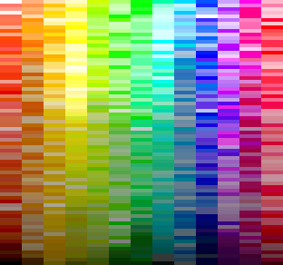
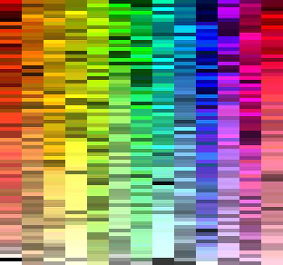
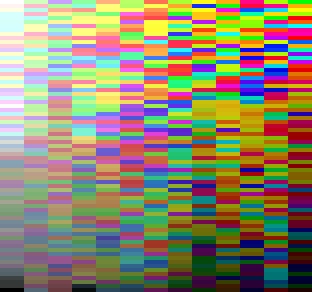
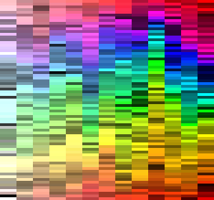
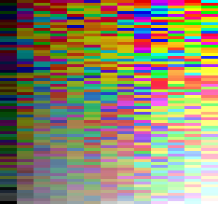
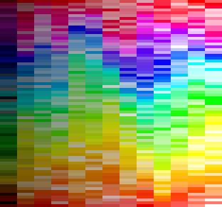
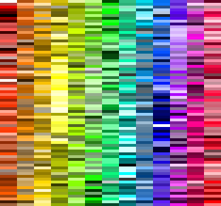
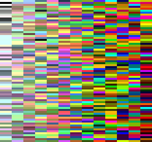
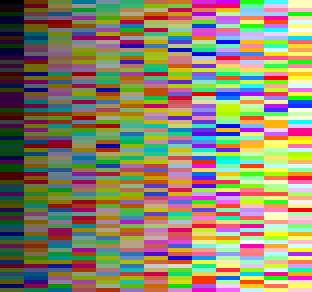

Fancy palettes ahead.
DISCLAIMER: I am not in any way affiliated with xkcd. I just used data from xkcd color name survey to generate some nice palettes.
HSV sorted in two dimensions, first H
| sorted by H than V  |
sorted by H than S  |
HSV sorted in two dimensions, first S
| sorted by S than V  |
sorted by S than H  |
HSV sorted in two dimensions, first V
| sorted by V than S  |
sorted by V than H  |
sorted in one dimension
| sorted by H  |
sorted by S  |
sorted by V  |
Author
Damir Cohadarevic (@cohadar)